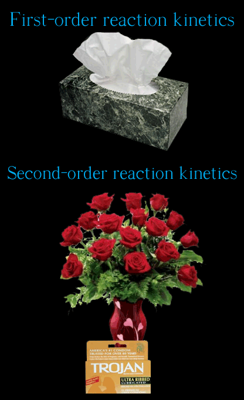

Comic JK 363
When I Feel Like It
⇤
<
?
>
⇥

⇤
<
?
>
⇥
Forum
.
RSS
.
Digg
.
Facebook
.
Reddit
.
Twitter
.
Stumbleupon
Enter your thoughts on number 363 here. Please, no spamming, trolling, or phreaking. Oh,,, I'm teaching my students about first and second order kinetics tomorrow... but it's a pretty conservative college .... This analogy works on every level So ... third order (if it happens) would be dinner and a pregnancy test? >Or multiple partners. I don't understand this one. Do I want to know?--Treitmaniac. My thoughts are, "LOL WUT". Am I supposed to know physics for this? > Yes >>everyone should know some physics anyway... >>>I know physics and I don't get it either. >>>>No. Physics is easy. You have to know chemical reaction engineering for this. >>>>>Which is? >>>>>>"Second-order" is when two molecules react together, while "first-order" is when a molecule reacts by itself... >>>>>>>thanks for explaining with the explanation the joke is awesome >>>>>>>>I second the previous statement. >>>>>>>>>The funny thing is I knew the chemical terms but I still didn't understand the joke because the penis reacts with the hand, and not by itself. >>>>>>>>>>I had misunderstood the tissues until you said that. I thought they meant the girl was watching Lifetime and having romantic feelings by herself, the roses indicate there's a man. I would love to introduce that comic in my next chemistry tutoring session as well as physics club general meeting, regardless of my personal image. ( The leading brand for condoms in the UK is Durex... confusingly, that brand name is also the leading brand of adhesive tape in Australia... British men arriving in Australia asking for Durex think they've been handed a self-assembly version... erm... I just thought I'd mention that... )